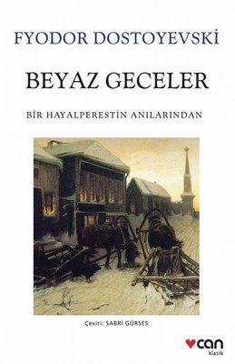

KitapKurdum |
Ana Sayfa | | Sıkça Okunanlar | | Sıkça Dinlenenler | | Yakın Zamanda Çıkacaklar | Kayıt Ol | Giriş Yap |
|---|
|  |
Yaz geldiğinde şehirdeki insanlar yazlık evlerine gitmeye başlar. Bu nedenle, kahramanımız çok yalnız hissediyor. Bu yüzden dolaşmaya başlar. O kadar çok yürüyor ki şehir dışında, bu sefer kırsalda dolaşmaya başlar. Gece şehre dönerken nehir kenarındaki korkuluklara yaslanmış ağlayan bir kız görür. Kızın yanına gider ama kız korkup karşıdan karşıya geçince vazgeçer ve yürümeye devam eder. Ama sarhoş bir adamın kızı rahatsız ettiğini gördükten hemen sonra kahramanımız kızın yanına gider ve onu kurtarır. Sonra kız ona minnettar olduğu için konuşmaya başlar ve yürümeye devam ederler. Kızın adı Nastenka ve on yedi yaşındadır. Kahramanımız Nastenka’ya eve kadar eşlik ederken, ona neden nehir kıyısında ağladığını sorar. Nastenka kendini tanımadığını ve eğer bilirse neden ağladığını anlatacağını söylüyor. Böylece ertesi gece aynı yerde tekrar buluşmak üzere sözleşirler. Kahramanımız çok mutlu, ilk defa bir kadına bu kadar yakınlaşıyor. O kadar heyecanlı ki, bir sonraki geceyi sabırsızlıkla bekliyor. Ertesi gece geldiğinde, konuşamadan Nastenka, arkadaş olabilmeleri için ona asla âşık olmaması gerektiği konusunda onu uyarır. Bunu kabul eder ve böylece aralarında bir dostluk başlar. Kahramanımız hikâyesini anlatmaya başlar. Ne kadar yalnız olduğunu, sekiz yıldır Petersburg’da yaşamasına rağmen hiç arkadaşı olmadığını ve günlerini evde tek başına hayal kurarak geçirdiğini anlatıyor. Konuşmasını bitirdiğinde Nastenka ona onu asla bırakmayacağını söyler. Böylece kendi hikâyesini anlatmaya başlar. Ailesi genç yaşta öldüğünde, Nastenka kör büyükannesiyle kalır. Bir keresinde büyükannesine itaatsizlik etti ve iki yıl boyunca Nastenka’nın elbisesini kendi başına tutturmuştur. Bu sebeple kendi yalnızlığına da mahkûm olmuştur. Başka bir geliri olmayan Nastenka ve büyükannesi, geçen yıl evlerinin çatı katını genç bir adama kiralar. Kiracı bir keresinde Nastenka’ya bir kitap gönderir ve ardından onu ve büyükannesini operaya götürür. Ama bir daha asla vurmayacak. Nastenka genç adama âşık olur. Ama adam bir iş için Moskova’ya gideceğini söyler. O gece Nastenka eşyalarını bir bavula toplar ve tavan arasına çıkar. Ancak genç adam bunu kabul etmez. Onu beklemesini söyler ve bir yıl sonra döndüğünde yine isterse kendisinden başka kimseyle evlenmez. Böylece ertesi sabah gider. Genç adam şehre döneli üç gün olmuştur, ama hala Nastenka’ya gelmemiştir. Nastenka bu yüzden o geceleri ağlar. Kahramanımız Nastenka’nın hikâyesine çok üzülür, onu teselli etmeye çalışır. Ama işler orada. Ancak, Nastenka’ya mektubu kendisine iletebilmesi için muhatabına bir mektup yazmasını söyler. Nastenka zaten bir mektup yazdı. Kahramanımız mektubu Nastenka’nın verdiği adrese götürür, ancak iki gün boyunca mektuba cevap gelmez. Nastenka buna çok üzüldü. Kahramanımız Nastenka’nın üzüntüsüne engel olamaz ve Nastenka’ya âşık olduğunu söyler. Nastenka çok şaşırır. Bunu beklemez ama sonra onun sevgisini umursamayan birini beklemek yerine onu seven ve değer veren birini tercih edeceğini anlar. Nastenka da onu sevdiğini söyler. Böylece bütün gece evlilik planları yaparak dolaşırlar. Gece geç saatlerde kahramanımız Nastenka’yı evine bırakırken karşı yönden gelen bir adam görürler. İşte bu, sonunda geldi. Nastenka adamın kollarına koşar, sonra geri döner ve kahramanımızı öper ve genç nişanlısıyla birlikte uzaklaşırlar. Çok üzüldü ama Nastenka gider. Ertesi gün Nastenka bir mektup gönderir. Mektubunda her zaman arkadaş kalacaklarını söyler. Kahramanımız ağlayarak mektubu defalarca okur. Ana Sayfa |